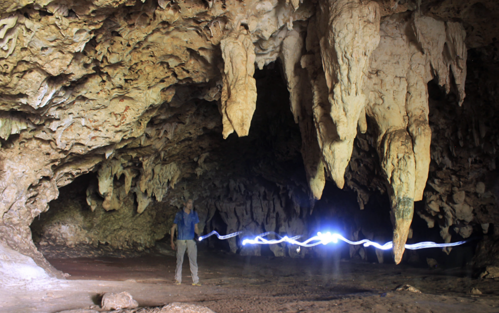
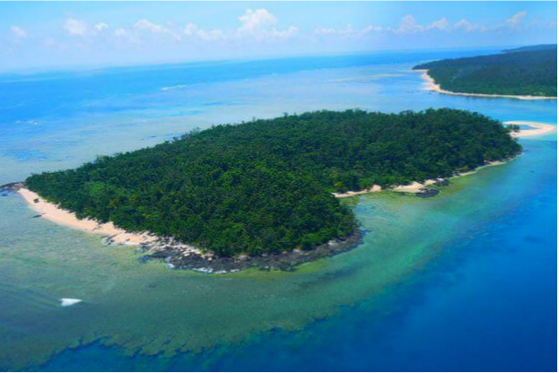
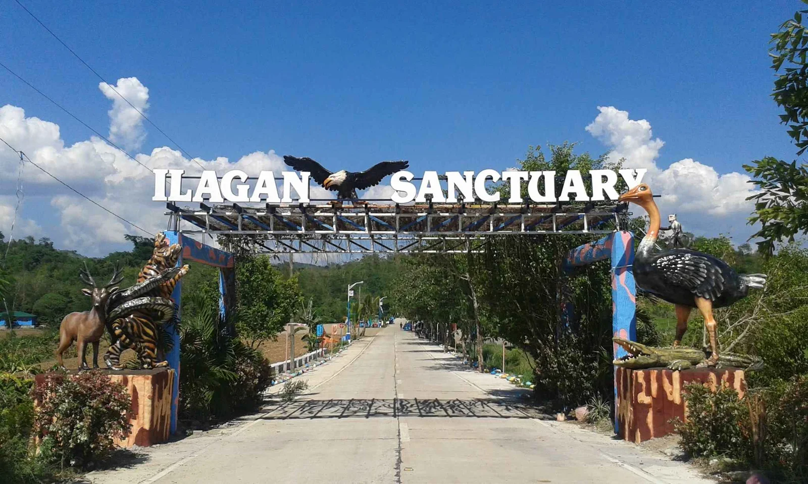
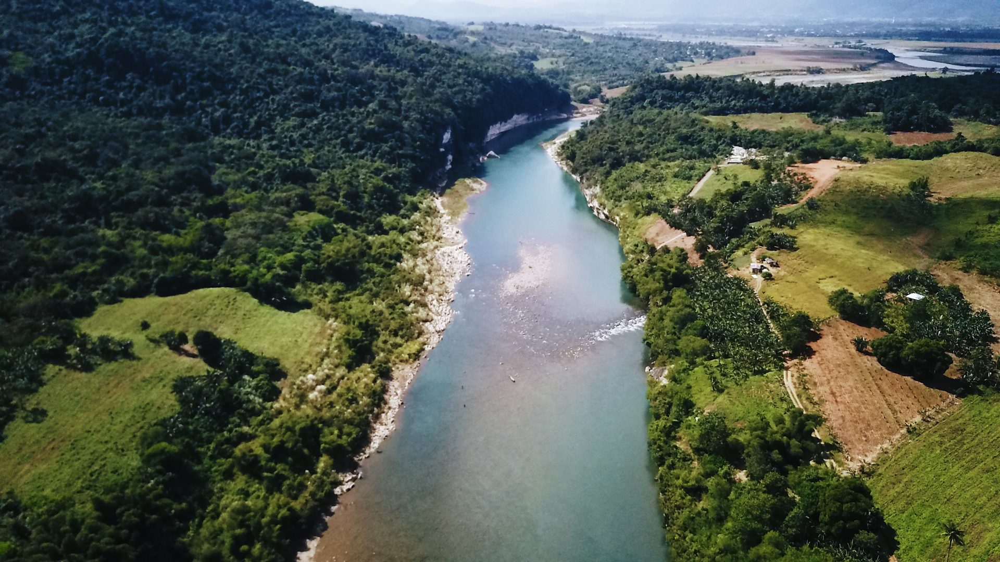
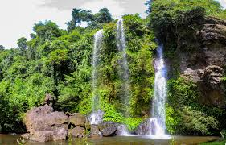
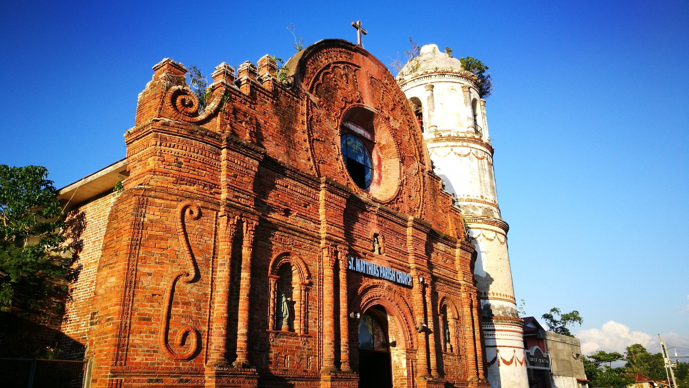
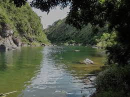

Places to See
Tourist Destinations
From majestic dams to ancient caves and lush wildlife sanctuaries — explore the best of Isabela.

NatureSanta Victoria Cave
Santa Victoria
One of Isabela's most fascinating geological wonders, Santa Victoria Cave features impressive stalactite and stalagmite formations…

AdventureDivilacan Coves & Coastline
Divilacan
Tucked along Isabela's remote Pacific coastline, Divilacan is a hidden gem featuring secluded coves, pristine beaches, dramatic ro…

NatureIlagan Wildlife Sanctuary
Ilagan City
Located in the heart of Ilagan City, this wildlife sanctuary protects endemic and endangered Philippine wildlife, offering visitor…
 Mountain
Mountain
Sierra Madre Mountain Range
Multiple Municipalities
The Sierra Madre Mountain Range, the longest mountain range in the Philippines, forms Isabela's eastern backbone. Offering challen…

RiverCagayan River (Isabela Section)
Province-wide
The mighty Cagayan River — the longest river in the Philippines at 505 km — flows through Isabela. Its Isabela section offers rive…

AdventureJones Eco Park
Jones
A community-managed eco-park in the municipality of Jones, featuring zip lines, river swimming, forest trails, and picnic grounds …

Historical SiteTumauini Church (Saint Dominic Church)
Tumauini
A UNESCO World Heritage Site tentative list candidate, the St. Dominic de Guzmán Parish Church in Tumauini is one of the finest ex…
Magat Dam & Reservoir
Ramon / Santiago City
One of the largest irrigation dams in Southeast Asia, the Magat Dam is an iconic landmark of Isabela. It spans the Magat River, a …

RiverDisulap River System
San Mariano
A pristine river system in the heart of the Sierra Madre, the Disulap River in San Mariano is a haven for nature lovers. Known for…